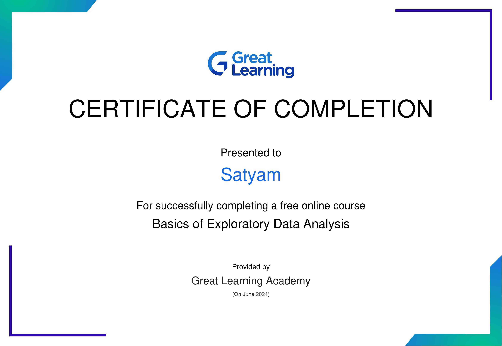

certifications
Introduction To
Data Science
Issuing organisation: CISCO
I’m thrilled to share that I’ve completed the Introduction to Data Science course! 🚀 I now have a strong grasp of key data science concepts, including: 🔠Data Collection and Cleaning 📊 Data Visualization ğŸ› ï¸ Python, Pandas, NumPy 📈 Basic Machine Learning This course has provided me with a comprehensive overview of the data science field, setting a strong foundation for further exploration and specialization.
Credential Id: 1IOATyMeZR7J58qncmcpEym4nos15bReVCredential URL:
https://drive.google.com/file/d/1IOATyMeZR7J58qncmcpEym4nos15bReV/view?usp=sharingData Science 101
Issuing organisation: cognitiveclass.ai
I’m thrilled to share that I’ve completed the Data Science 101 course! 🚀 Throughout the course, I gained valuable skills in: 🔠Data Analysis 📊 Data Visualization ğŸ› ï¸ Python, Pandas, NumPy, Matplotlib 🤖 Machine Learning Basics This experience has fueled my passion for data-driven problem-solving. I'm eager to apply these skills to real-world projects and connect with fellow data enthusiasts.
Credential Id: c71aedcbd612428ca1d439b9feea7ecbCredential URL:
https://courses.cognitiveclass.ai/certificates/c71aedcbd612428ca1d439b9feea7ecbData Science
Foundation
Issuing organisation: My Great Learning
I’m thrilled to share that I’ve completed the Data Science Foundation course! 🚀 Throughout the course, I gained a solid understanding of fundamental data science principles, including: 🔠Data Analysis 📊 Data Visualization ğŸ› ï¸ Tools like Python and R 📈 Statistical Methods This foundational knowledge has equipped me with the skills needed to pursue more advanced data science topics and projects. I’m excited to apply these insights and continue my learning journey.
Credential Id: 1DFuKBAWigzsG2AJv7pVLJsPZizhDcVuRCredential URL:
https://drive.google.com/file/d/1DFuKBAWigzsG2AJv7pVLJsPZizhDcVuR/view?usp=sharingBasics of
Exploratory DSA
Issuing organisation: My Great Learning
I’m thrilled to share that I’ve completed the Basics of Exploratory Data Analysis course! 🚀 I learned essential techniques for analyzing and visualizing data to uncover insights, such as: 🔠Data Cleaning and Preprocessing 📊 Data Visualization Techniques ğŸ› ï¸ Python, Pandas, Matplotlib 📈 Descriptive Statistics These skills are crucial for making data-driven decisions and deriving actionable insights from data. I’m eager to apply them in real-world scenarios.
Credential Id: 1xlaF42-bnUqAmSKos3UkeqwHTytgnLcMCredential URL:
https://drive.google.com/file/d/1xlaF42-bnUqAmSKos3UkeqwHTytgnLcM/view?usp=sharingGPT for Beginners
Issuing organisation: My Great Learning
I’m thrilled to share that I’ve completed the Chat GPT for Beginners course! 🚀 I explored the fundamentals of Chat GPT and its applications, including: 🔠Natural Language Processing (NLP) 🤖 Understanding GPT Models ğŸ› ï¸ Python and NLP Libraries 📈 Practical Use Cases This course has opened my eyes to the potential of AI and conversational models in various industries. I’m excited to delve deeper into AI and machine learning.
Credential ID: 1hSRmFEyEZK9tbhAuiY2fNSK9sj5AjjXuCredential URL:
https://drive.google.com/file/d/1hSRmFEyEZK9tbhAuiY2fNSK9sj5AjjXu/view?usp=sharingData Analysis
with Python

Issuing organisation: cognitiveclass.ai
I’m thrilled to share that I’ve completed the Data Analysis with Python course! 🚀 I gained hands-on experience with Python libraries for data analysis and visualization, such as: 🔠Data Cleaning and Transformation 📊 Data Visualization with Matplotlib and Seaborn ğŸ› ï¸ Pandas, NumPy 📈 Statistical Analysis These skills are essential for extracting insights and making data-driven decisions. I’m excited to apply them to real-world projects.
Credential ID: 9eab90437af84aa2950a099624d9f125Credential URL:
https://courses.cognitiveclass.ai/certificates/9eab90437af84aa2950a099624d9f125Introduction To Data Science
Issuing organisation: My Great Learning
I’m thrilled to share that I’ve completed the Introduction to Data Science course! 🚀 I now have a strong grasp of key data science concepts, including: 🔠Data Collection and Cleaning 📊 Data Visualization ğŸ› ï¸ Python, Pandas, NumPy 📈 Basic Machine Learning This course has provided me with a comprehensive overview of the data science field, setting a strong foundation for further exploration and specialization.
Credential id: 1xiYEN2ot-s5nyoxoV1gA3CmYMOqidG9LCredential URL:
https://drive.google.com/file/d/1xiYEN2ot-s5nyoxoV1gA3CmYMOqidG9L/view?usp=sharingPython 101 for Data Science
Issuing organisation: cognitiveclass.ai
I’m thrilled to share that I’ve completed the Python 101 for Data Science course! 🚀 I now have a strong grasp of Python fundamentals tailored for data science applications, including: 🔠Basic Programming Concepts 📊 Data Structures and Algorithms ğŸ› ï¸ Python Libraries (Pandas, NumPy) 📈 Data Manipulation and Analysis This course has provided me with the foundational Python skills necessary for a successful data science career.
CREDENTIAL ID: fbaf549fbb5d48ab9733e69adb471303Credential URL:
https://courses.cognitiveclass.ai/certificates/fbaf549fbb5d48ab9733e69adb471303Python For Data Science
Issuing organisation: My Great Learning
I’m thrilled to share that I’ve completed the Python for Data Science course! 🚀 I deepened my knowledge of Python and its powerful tools for data science, focusing on: 🔠Advanced Data Manipulation 📊 Data Visualization Techniques ğŸ› ï¸ Python Libraries (Pandas, NumPy, Matplotlib) 📈 Machine Learning Basics These advanced skills will help me tackle complex data science challenges and develop innovative solutions.